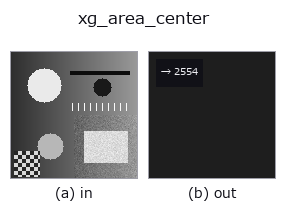

xldgeom op• 데이터 종류: contour → feature
• 호출: fullseye.apply(img, "xg_area_center", a=0.5, b=0.5)(2-D 는 이미지 1 장 + 스칼라 노브 2 개 a,b∈[0,1] 모델)
• HALCON 대응: area_center_points_xld(의미·매개변수는 HALCON 레퍼런스가 참고가 됩니다)

*그림은 128×128 합성 입력에서 실제로 실행한 출력. 왼쪽이 입력, 오른쪽이 출력. 점군은 위에서 본 산점도(밝기 = z), 1-D 열은 꺾은선, 볼륨은 z 방향 최대값 투영, 동영상은 가운데 프레임, 복소 영상은 진폭이며, 그림이 되지 않는 반환값은 값 자체를 표시한다.*
*노브 a 는 출력을 바꾸지 않는다(실측: 0.1 / 0.5 / 0.9에서 동일).*
*노브 b 는 출력을 바꾸지 않는다(실측: 0.1 / 0.5 / 0.9에서 동일).*
단계(앞에 오는 op → 이 op, 왼쪽에서 오른쪽으로):
▸ xg_area_center: 단계 (문서 사이트)
신발끈 공식으로 contour 의 다각형 면적을(절대값의 합).
윤곽 사전 {"shape": (H, W), "cs": [Nx2의 (row, col) 점열, ...]}의 각 윤곽을다각형으로 간주하고, 신발끈 공식 0.5*|Σ(x_i*y_{i+1} - x_{i+1}*y_i)|으로 면적을구해 모든 윤곽의 합계를 반환한다. 점이 3개 미만인 윤곽은 0으로 무시한다. a, b는사용하지 않는다.
반환값은 numpy.float64(단위는 화소², 정규화 없음). 윤곽이 없거나, 사전이아니거나, 비유한 값을 포함한 윤곽은 건너뛰며 합계에 기여하지 않는다(비어 있으면 0.0). 열린 윤곽이라도 "마지막 점과 첫 점을 이어 닫은 다각형"의 면적이 된다는 점에주의(직선 모양의 열린 윤곽은 0, 꺾은선 모양의 열린 윤곽은 0이 아니다). 절댓값을 취하므로점열의 방향(시계 방향/반시계 방향)은 결과에 영향을 주지 않는다. 자기 교차하는 윤곽에서는교차점에서 부호가 상쇄되어 실제 면적보다 작게 나온다. 이름과 달리 무게중심은반환하지 않는다(면적만). 같은 점 집합의 2차 모멘트는 xg_moments, bbox의종횡비는 xg_height_width_ratio.
• 샘플 데이터 카탈로그(DL URL / 라이선스) —— 2-D 는 skimage.data(BSD/public)+ 합성, 3-D 는 실데이터 소스(Stanford/PDS 등)의 DL URL.
• 연산자의 내력·참고문헌 —— 이 연산자 족의 바탕이 된 연구/기법의 출처.
• 알고리즘의 정전(저자·연도)과 용도는 위의 패밀리 사용 가이드에 적혀 있습니다.
아래 프로그램은 실제로 실행됨을 확인했습니다(그림과 같은 입력). Studio 도움말에서는 이 블록이 버튼이 되어 즉시 불러와 실행할 수 있습니다.
threshold 0.50 0.50 sk_find_contours 0.50 0.50 xg_area_center 0.50 0.50
• gallery2d_geometry — py -3.11 examples/gallery2d_geometry.py
feature 를 입력으로 받는 것)xldgeom)xg_moments · xg_eccentricity · xg_orientation · xg_elliptic_axis · xg_height_width_ratio · xg_regress_contours · xg_clip_contours · xg_gen_polygons
*Provenance: ops.py — 2D 연산자 레지스트리. 이 op 노트는 tools/opdocs.py md 가 자동 생성합니다(직접 편집하지 마세요).*
© 2026 Kazufumi Furuse — Fullseye operator documentation. Licensed under Apache-2.0.